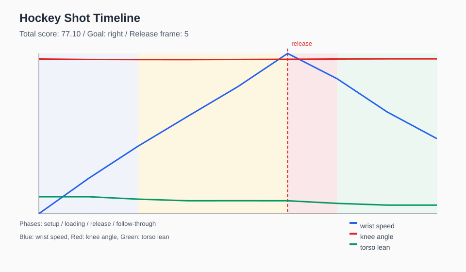

Hockey Shot Report
Side-view wrist shot analysis / Goal direction: right / Release frame: 5
77.10
Total score
Scores
| Knee flexion | 9.37 | |
| Weight transfer | 100.00 | |
| Stance width | 100.00 | |
| Torso lean | 68.18 | |
| Wrist snap timing | 100.00 | |
| Follow-through | 100.00 |
Measured Values
Release time0.08 s
Knee angle176.72 deg
Body scale0.59
Weight transfer0.12
Stance width0.41
Torso lean3.64 deg
Max wrist speed7.09
Advice
- 膝の曲がりが浅い可能性があります。セットアップからリリース前にもう少し沈み込む意識を持つとよいです。
- 上半身の前傾が少ない、または倒れ込みすぎている可能性があります。肩と腰のラインを安定させてください。
Release And Follow-through
Follow-through x0.23
Follow-through y drop0.03
Timeline
